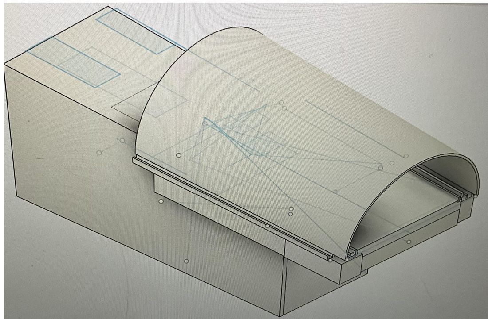
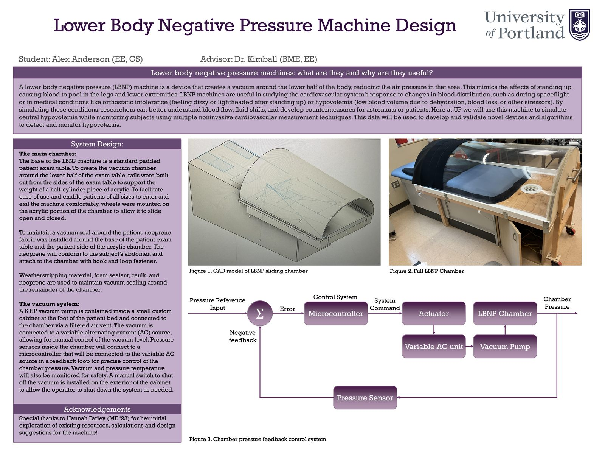
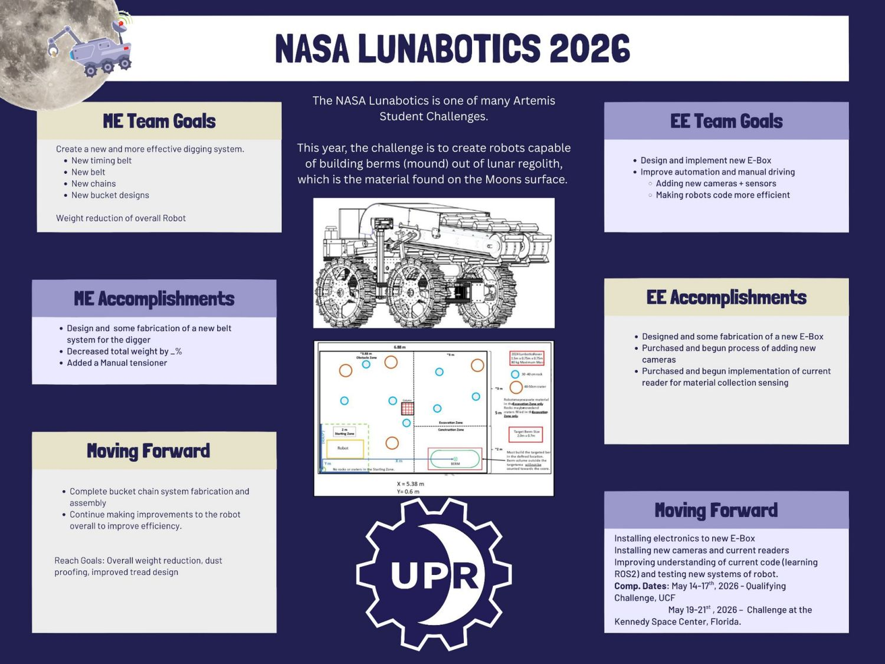
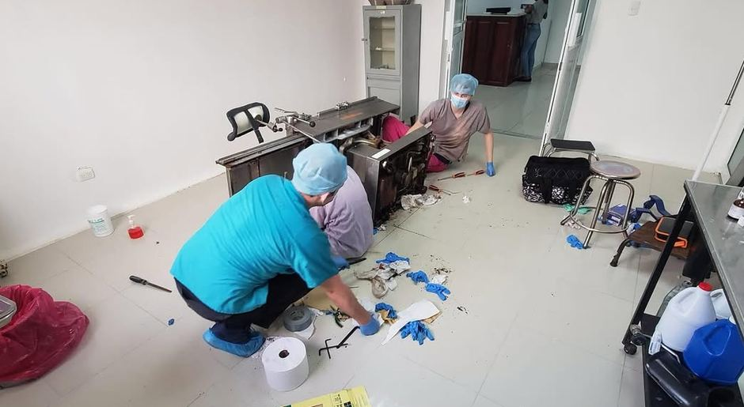

Alex Anderson
Electrical engineer: hardware, test & controls, plus Python/SQL data pipelines
anderale26@up.eduPortland, OR
Electrical engineer and lead robotics controls engineer with hands-on experience building IC test software, medical research hardware, and end-to-end clinical-data engineering tools. At BIOTRONIK, I developed the BioSleep database, data decoders, and sleep-algorithm testing platform; at MSEI, I automated integrated-circuit reliability tests. B.S. Electrical Engineering, minor in Artificial Intelligence · University of Portland, 2026.
BioSleep: end-to-end sleep-data engineering & algorithm testing
Software / Data Engineering Intern · BIOTRONIK, Neuro Clinical Technology · Lake Oswego, OR
- Engineered the end-to-end BioSleep characterization platform: decoded and reconciled implant actigraphy, wrist wearable, Apple Health and paper-diary data in a Snowflake database with dbt models and nightly/epoch-level joins.
- Automated paper-diary reading with Snowflake AI_EXTRACT and a custom OpenCV reader for AM/PM marks: 98% accuracy on clean marks, checked against hand-verified entries.
- Built the software used to review and test sleep-algorithm outputs: Flask REST API and dashboard, Streamlit-in-Snowflake review tools, and Ask BioSleep, a citation-grounded Snowflake Cortex assistant.
- Found and fixed data problems: cut a false "degenerate night" rate from 70% to about 25%, recovered about 82 device-days by reverse-engineering an actigraphy file format, and traced a clock offset of up to ±7 hours that raised cross-device agreement from 0.66 to 0.71.
- Developed repeatable algorithm testing and characterization workflows: reproduced 59 debug nights and swept 60 configuration settings over 89 nights to identify output-sensitive parameters.
- Presented results to the team and handed the project off with 10 runbooks.
IC test & reliability software
Electrical Engineering Intern, Quality & Reliability · Microsystems Engineering Inc. · Lake Oswego, OR
- Developed C/C# and NI LabWindows/CVI software for automated electrical testing of implantable medical-device ICs; integrated NI PXIe-4145/4163 source-measure units, PXIe-6570 digital I/O, PXIe-2567 relay matrix, and DAQ hardware.
- Built a Visual Studio instrument-control GUI and programmed automated continuity, isolation, current, and voltage test sequences with relay switching, safe power sequencing, measurement thresholds, and fault detection.
- Debugged PXIe timing, relay mapping, and hardware/software integration; documented test setup and troubleshooting procedures and supported IC packaging, wire-bond, and pad-classification analysis.
Lower Body Negative Pressure machine
Designer and builder · University of Portland research · Advisor: Dr. Kimball (BME, EE)

An LBNP machine pulls a vacuum around the lower body, pooling blood in the legs the way standing up or spaceflight does. UP uses it to simulate central hypovolemia (low blood volume) while measuring subjects with noninvasive cardiovascular sensors, to develop and validate new detection devices and algorithms.
- Designed the sliding acrylic half-cylinder chamber on wheeled rails, so patients of any size can get in and out easily.
- Sealed the chamber with neoprene that conforms to the subject's abdomen, plus weatherstripping, foam sealant and caulk.
- Housed a 6 HP vacuum pump in a custom cabinet with a filtered vent, a variable AC supply for vacuum level, and an external emergency shutoff.
- Designed a pressure-feedback architecture using chamber pressure sensors, a microcontroller and a variable AC supply, with temperature monitoring.
View the full research poster

NASA Lunabotics: regolith berm-building robot
Lead Controls Engineer · University of Portland Robotics (UPR)
Lunabotics is one of NASA's Artemis Student Challenges. The 2026 task: build a robot that digs lunar regolith simulant and builds it into a berm in a target zone, over an arena with rocks and craters.
- Led controls engineering for University of Portland Robotics: developed manual teleoperation and autonomous-control integration for the lunar-regolith excavation robot.
- Integrated cameras, sensors and current readers for drive feedback and material-collection sensing; contributed motor soft-start/stop behavior and embedded communication between controllers and Jetson.
- Helped migrate the robotics software toward ROS2, connecting hardware interfaces, camera data and autonomous navigation with the operator controls.
- Produced and integrated controls software, wiring and hardware interfaces for the NASA Lunabotics competition robot, collaborating with the electrical and mechanical teams.
View the team poster

Medical equipment repair
Student Engineer · Engineering World Health · Dominican Republic

Traveled to repair and maintain medical equipment in clinics, working with limited parts and tools.
- Repaired, calibrated and documented infusion pumps, electrosurgical units, oxygen concentrators and vital-signs monitors in resource-limited hospitals.
- Performed board-level troubleshooting and prepared bilingual repair logs to support local technician training.


Carpentry & concrete construction
Journeyman Carpenter, John Webb Construction (Eugene, OR) · Concrete Carpenter, Tradesmen International


- Journeyman carpenter, John Webb Construction, 2011–2015: pole barns, boiler rooms, steel-stud framing, and the restoration of Tillamook City Hall.
- Concrete carpenter, Tradesmen International, 2015–2016: forms, footings and tilt-up panels for a commercial building for Intel.
- Read blueprints, ran forklifts, scissor lifts and boom lifts, and worked at height following job-site safety rules.
Certifications
Safety and equipment training

- OSHA 10-Hour Construction Safety and Health (2020)
- Forklift operation
- Scissor lift operation
- Boom lift operation
Hardware
Circuit analysis, PCB layout (Fusion), sensor interfacing, voltage regulation, microcontrollers / Arduino, fabrication.
Controls & robotics
Closed-loop control design, ROS2, teleoperation and autonomy, camera and sensor integration.
Software & data
Python, SQL, Snowflake, dbt, Flask, Streamlit, OpenCV, pytest, Docker, Git.
Design
Fusion 360 CAD, mechanical design for medical and research equipment.